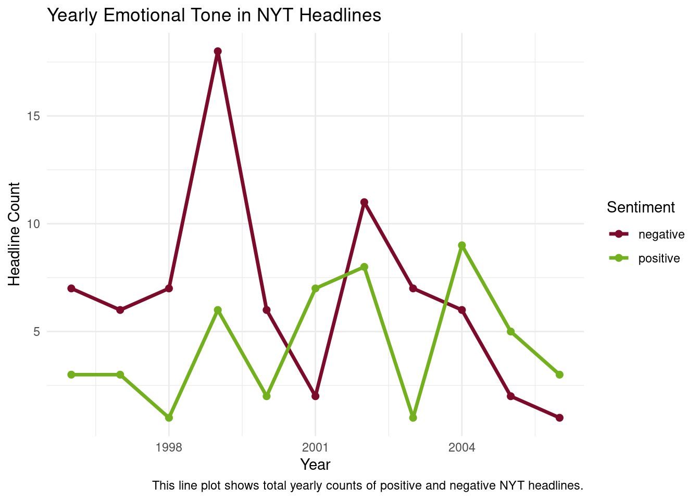
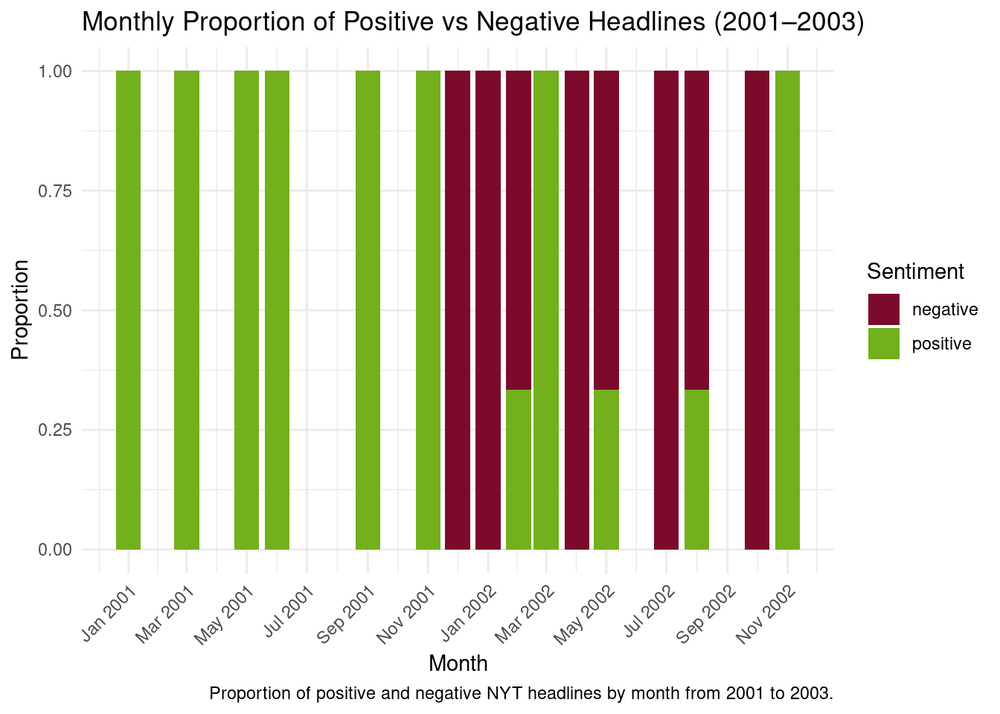

This project analyzes emotional tone in New York Times article headlines using regular expressions (regex). To analyze the emotional tone of New York Times headlines, I defined negative and positive word lists using keywords that commonly indicate negative events or risks (e.g., crisis, warning, fall, decline, collapse, turmoil) and positive developments (e.g., success, rise, growth, progress, recovery). Regular expressions were used to detect these words in headlines, including variations such as plurals or related word forms, allowing me to categorize headlines as containing positive or negative emotional signals and analyze how these patterns vary over time.
The data come from the NYTimes dataset in the RTextTools package, which contains New York Times headlines, publication dates, and metadata.
Code
library(tidyverse)library(stringr)library(lubridate)library(RTextTools) library(forcats)data(NYTimes)nyt <-as_tibble(NYTimes)nyt<-nyt |>mutate(Date=as.Date(Date, format ="%d-%b-%y"))nyt_clean <- nyt |>mutate(clean_headline = Title |>str_to_lower() |>str_replace_all("[^a-z\\s]", " ") |># REGEX 1: remove non-lettersstr_squish(),year =year(Date),month =floor_date(Date, "month"))negative_pattern <-"\\b(crisis|warning\\w*|fall\\w*|decline|collapse|turmoil)\\b"#REGEX 2: negative statement listpositive_pattern <-"\\b(success|rise|growth|progress|improve|recovery|gain)\\b"#REGEX3: positive statement listrise_pattern <-"(?<!sun)rise"#LOOKAROUND: ensures it only picks up rise when it is not associated with sunrisenyt_sentiment <- nyt_clean |>mutate(negative =str_detect(clean_headline, negative_pattern),positive =str_detect(clean_headline, positive_pattern) |str_detect(clean_headline, rise_pattern))sentiment_year <- nyt_sentiment |>group_by(year) |>summarise(positive =sum(positive),negative =sum(negative))
Code
sentiment_year_long <- sentiment_year |>pivot_longer(cols =c(positive, negative),names_to ="sentiment", values_to ="count")ggplot(sentiment_year_long, aes(x = year, y = count, color = sentiment)) +geom_line(size =1.2) +geom_point(size =2) +scale_color_manual(values =c("positive"="#72B01D", "negative"="#7C0B2B")) +labs(title ="Yearly Emotional Tone in NYT Headlines",x ="Year",y ="Headline Count",color ="Sentiment", caption="This line plot shows total yearly counts of positive and negative NYT headlines." ) +theme_minimal()

This graph provides a broader trend across years, noting that negative headlines typically outnumber positive ones.
Code
sentiment_month <- nyt_sentiment |>pivot_longer(cols =c(positive, negative),names_to ="sentiment",values_to ="value" ) |>filter(value ==TRUE) |>group_by(month, sentiment) |>summarise(count =n())# Filter to years 2001-2003sentiment_month_filtered <- sentiment_month |>filter(month >=as.Date("2001-01-01") & month <=as.Date("2002-12-31")) |>group_by(month) |>mutate(total =sum(count),proportion = count / total)ggplot(sentiment_month_filtered,aes(x = month, y = proportion, fill = sentiment)) +geom_col() +scale_fill_manual(values =c("positive"="#72B01D", "negative"="#7C0B2B")) +labs(title ="Monthly Proportion of Positive vs Negative Headlines (2001–2003)",x ="Month",y ="Proportion",fill ="Sentiment", caption ="Proportion of positive and negative NYT headlines by month from 2001 to 2003." ) +scale_x_date(date_labels ="%b %Y", date_breaks ="2 months") +theme_minimal() +theme(axis.text.x =element_text(angle =45, hjust =1))

This plot shows the proportion of positive and negative NYT headlines by month from 2001 to 2003. Notice the spike in negative sentiment after September 2001, likely reflecting coverage of the 9/11 attacks.
Sources
Jurka, T. P., Collingwood, L., Boydstun, A. E., Grossman, E., & van Atteveldt, W. (2020). RTextTools: Automatic text classification via supervised learning (R package version 1.4.3) [Data set and software]. http://www.rtexttools.com/